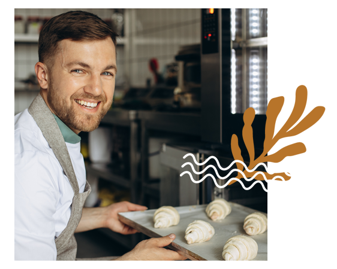

Our Story
In the whimsical town of Sugarvale stood "Enchanted Crust," a bakery where magic and pastry collided. Run by the lively Elara Frostingbottom, this charming place was known for its enchanted treats that brought joy to all who tasted them. One day, curious Lila discovered the bakery and, under Elara's guidance, delved into the world of magical baking. Together, they created pastries that levitated, changed flavors, and danced on taste buds. Word spread, and Enchanted Crust became a haven for those seeking not just delicious treats but a touch of enchantment. In the heart of Sugarvale, this bakery continued to weave magic into every pastry, turning ordinary visits into extraordinary journeys.
